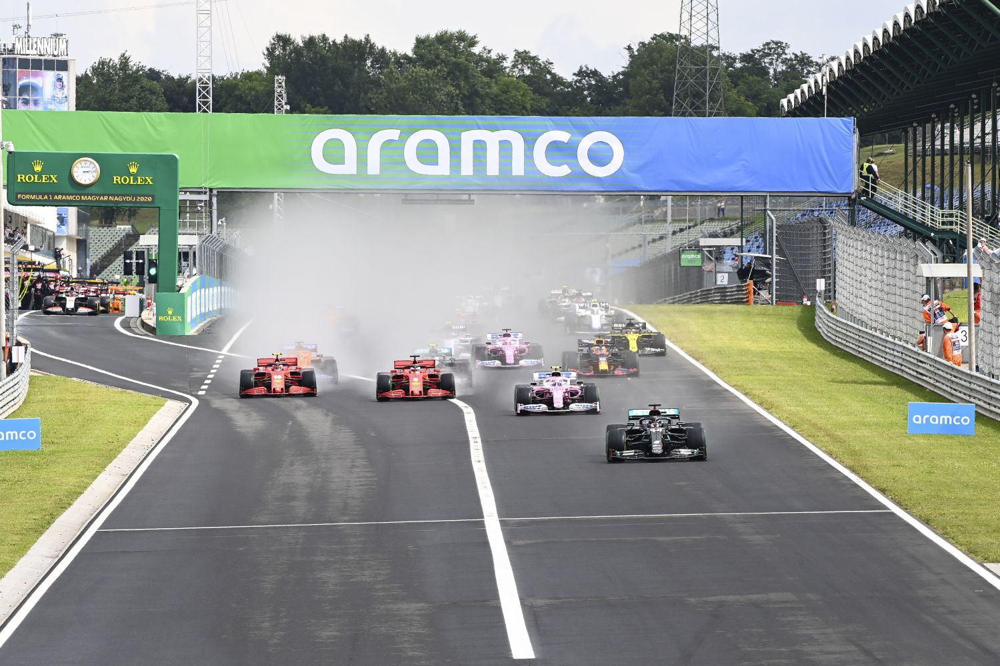
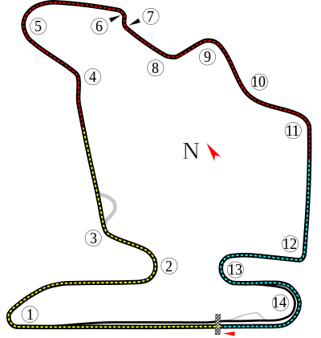

NAVEGUE
Home
Pilotos
Calendário/Tabela
Grand Prix
Construtoras
Últimas Notícias
GP da Hungria
SOBRE
Hungaroring é uma pista de corrida localizada em Budapeste, Hungria. É uma das pistas mais técnicas e desafiadoras da Fórmula 1, conhecida por suas curvas apertadas e sinuosas. A pista tem uma extensão de 4,381 km e é composta por 14 curvas, incluindo a famosa "Curva 1", que é um ponto de ultrapassagem popular. A pista foi inaugurada em 1986 e tem sido um local importante para corridas de carros desde então. A corrida anual de Fórmula 1 em Budapeste é uma das mais populares do calendário, com fãs húngaros apaixonados e entusiasmados criando uma atmosfera única e vibrante durante todo o fim de semana de corrida. A pista também é conhecida por ser um teste para a habilidade dos pilotos em manter a velocidade nas curvas apertadas e por exigir uma estratégia de corrida inteligente para se destacar na competição.
Circuitos Utilizados
Hungaroring

INFORMAÇÕES DA CORRIDA

Localização
Mogyorog, Hungria
Voltas
70
Percurso
4.381 km
Total
306.670 km
Curvas
14
Pole
Lewis Hamilton
Anos Disputados
38
Última Disputa
2022
Maior vencedor
Lewis Hamilton
Última Corrida - Pódio
Max Verstappen